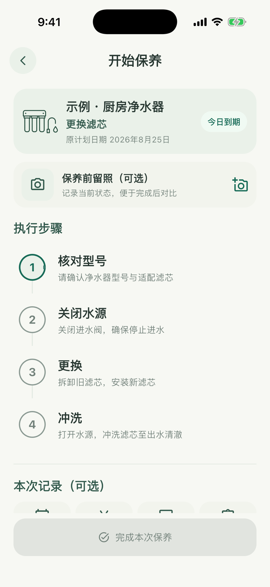

03 · 按步骤完成，留下真实结果
完成保养并留档
计划到期后，从日程或净水器详情开始保养。执行页会保留原计划日期，并引导你逐项完成。

- 1
开始本次保养
从“日程”的任务卡，或物品详情中的保养计划进入执行页。
- 2
逐项完成步骤
按照清单核对型号、关闭水源、更换滤芯并冲洗。每完成一步就点击对应步骤。
- 3
补充真实结果
可选填写费用、耗材型号、备注和保养前后照片；照片不会阻止你完成任务。
- 4
完成并进入下一周期
保存后，本次结果进入生命周期；启用的周期计划会据此生成下一次日期。